คู่มือใช้งานเครื่องมือ · ระดับ Free
ตรวจระบบ VRV/VRF
VRV/VRF Calculator
FREE
สำหรับช่างเทคนิคที่เพิ่งเริ่มงาน — อ่านแล้วทำตามได้เอง
ใช้เวลาฝึกประมาณ 60 นาที
เคสตัวอย่าง: อาคาร A ชุดคอยล์ร้อน 28 kW ต่อคอยล์เย็น 8 เครื่อง สาร R410A
อ.หนึ่ง กลับทวี / Aj. Nueng Klubtavee
tripleeenergytools.com
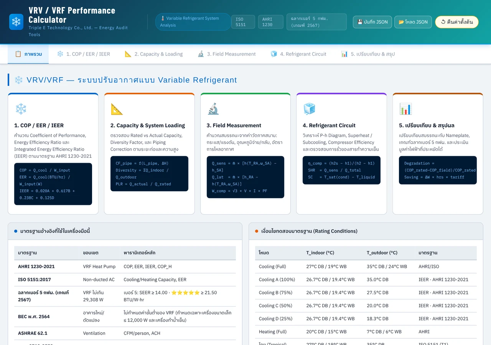
หน้าจอเครื่องมือ — เปิดได้จากเมนู Free ของเว็บไซต์
รุ่นเครื่องมือ: Free commit 7857532 · จับภาพ 25 พ.ย. 2569 · คู่มือ Rev03
เครื่องมือนี้ตอบคำถามอะไร
คู่มือใช้งาน · ระบบปรับอากาศ VRV/VRF (VRV/VRF Performance Calculator) · ระดับ Free
2 / 30
| คำถามหน้างาน | ใช้แท็บไหน | เคสอาคาร A ได้ |
|---|---|---|
| ระบบนี้ประสิทธิภาพตามป้ายเท่าไร ได้ฉลากระดับไหน | 1. COP / EER / IEER | COP 3.294 · เบอร์ 5 ⭐ |
| ต่อคอยล์เย็นมากเกินไปไหม ท่อยาวแล้วเหลือความเย็นเท่าไร | 2. Capacity & Loading | เหลือ 26.55 kW · PLR 1.028 |
| ตอนนี้ทำความเย็นได้จริงเท่าไร กินไฟเท่าไร | 3. Field Measurement | 26.35 kW · ไฟ 8.48 kW |
| น้ำยาและคอมเพรสเซอร์ทำงานปกติไหม | 4. Refrigerant Circuit | SH 7.0 · SC 5.0 °C |
| ประสิทธิภาพตกจากป้ายแค่ไหน เสียเงินปีละเท่าไร | 5. เปรียบเทียบ & สรุป | ตก 5.7 % · 5,643 บาท/ปี |
💡 เคล็ดลับ
ทำแท็บ 1 → 4 ให้ครบก่อน แล้วแท็บ 5 จะสรุปให้เองโดยไม่ต้องกรอกอะไรเพิ่ม
แผนที่หน้าจอ
คู่มือใช้งาน · ระบบปรับอากาศ VRV/VRF (VRV/VRF Performance Calculator) · ระดับ Free
3 / 30
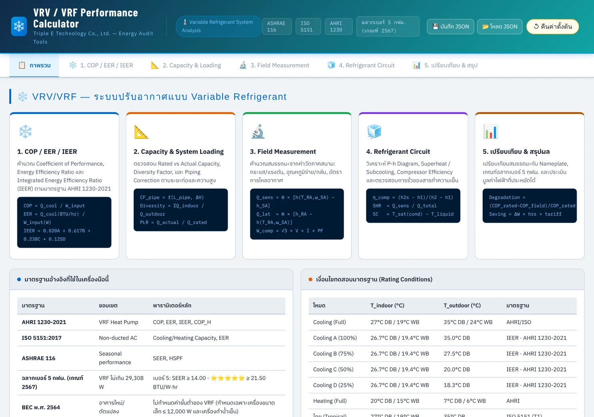
1
2
3
4
5
6
1
บันทึก JSON · โหลด JSON — เก็บและเปิดงานเดิม
2
คืนค่าตั้งต้น — ล้างทุกช่องกลับเป็นตัวอย่าง
3
แท็บ 6 แท็บ: ภาพรวม + แท็บทำงาน 5 แท็บ เรียงตามลำดับงาน
4
การ์ดสรุปว่าแต่ละแท็บทำอะไร
5
มาตรฐานอ้างอิงที่เครื่องมือใช้
6
เงื่อนไขทดสอบมาตรฐาน — อุณหภูมิที่ป้ายเครื่องอ้างถึง
💡 เคล็ดลับ
ทุกแท็บจัดเหมือนกัน: ซ้าย = ช่องกรอก · ขวา = ผลลัพธ์ — กรอกจากบนลงล่างแล้วกดปุ่มสี
เปิดบนมือถือ สลับภาษา และป้ายสีข้างชื่อช่อง
คู่มือใช้งาน · ระบบปรับอากาศ VRV/VRF (VRV/VRF Performance Calculator) · ระดับ Free
4 / 30
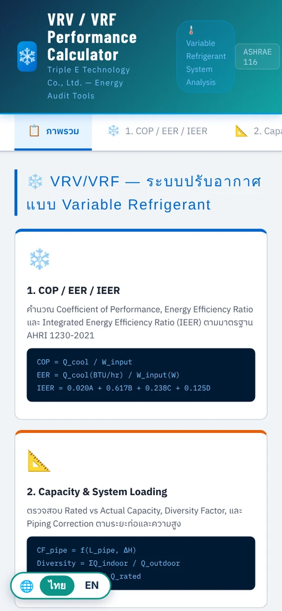
ใช้บนมือถือหน้างานได้ — หน้าจอเรียงเป็นคอลัมน์เดียว ผลลัพธ์อยู่ใต้ช่องกรอก
ปุ่ม 🌐 ไทย | EN ลอยอยู่ด้านล่าง กดสลับภาษาได้ ค่าที่กรอกไว้ไม่หาย
ป้าย ออกแบบ = อ่านจากป้ายเครื่อง/แบบ · วัดจริง = ต้องวัดหน้างาน · ตั้งค่า = สมมติฐานที่เลือกเอง
ปุ่ม ⓘ ข้างชื่อช่อง กดเพื่อดูคำอธิบายและช่วงค่าปกติ
💡 เคล็ดลับ
จดค่าลงแบบฟอร์ม (สไลด์ 6) ที่หน้างานก่อน แล้วค่อยกรอก จะผิดน้อยกว่า
คำศัพท์ 6 คำที่ต้องรู้ก่อนเริ่ม
คู่มือใช้งาน · ระบบปรับอากาศ VRV/VRF (VRV/VRF Performance Calculator) · ระดับ Free
5 / 30
| คำ | ความหมายแบบสั้น | จำง่าย ๆ |
|---|---|---|
| ODU / IDU | ODU = ชุดคอยล์ร้อน (อยู่นอกอาคาร มีคอมเพรสเซอร์) · IDU = คอยล์เย็นในห้อง | 1 ODU ต่อ IDU ได้หลายเครื่อง |
| COP / EER | ความเย็นที่ได้ (kW) ÷ ไฟที่ใช้ (kW) | ยิ่งสูงยิ่งดี |
| IEER | ประสิทธิภาพเฉลี่ยถ่วงน้ำหนักที่โหลด 100 / 75 / 50 / 25 % | VRF เดินโหลดบางส่วนเกือบตลอด |
| Diversity | ขนาด IDU รวมทุกเครื่อง ÷ ขนาด ODU | เกิน 1.0 = ต่อ IDU เกินขนาด ODU |
| PLR | ขนาด IDU รวม ÷ ความเย็นที่ ODU ทำได้จริงหลังหักท่อและอากาศร้อน | เกิน 1.1 = ODU ไม่พอ |
| SH / SC | Superheat / Subcooling — ตัวบอกว่าน้ำยาในระบบพอดีหรือไม่ | ช่างแอร์ใช้เกจวัดน้ำยาหา |
💡 เคล็ดลับ
ป้ายสถานะ ✅ ⚠️ ❌ ในเครื่องมือนี้ใช้ช่วงค่าแนวทางของเครื่องมือ ยกเว้นระดับฉลากเบอร์ 5 ที่ใช้เกณฑ์ กฟผ.
เตรียมข้อมูลก่อนลงหน้างาน (แบบฟอร์มจดค่า)
คู่มือใช้งาน · ระบบปรับอากาศ VRV/VRF (VRV/VRF Performance Calculator) · ระดับ Free
6 / 30
| แท็บ | ข้อมูลที่ต้องจด | เครื่องมือวัด / แหล่งข้อมูล | ค่าอาคาร A |
|---|---|---|---|
| 1 | ป้าย ODU: ความเย็น (kW) · ไฟฟ้า (kW) · EER · IEER · สารทำความเย็น · SEER ที่ฉลาก | ถ่ายรูปป้าย ODU / แคตตาล็อก | 28.0 · 8.5 kW · 3.29 · 5.2 · R410A · 16.0 |
| 2 | ขนาด IDU ทุกเครื่อง (kW) | ป้าย IDU / แบบ | 8 เครื่อง รวม 27.3 kW |
| 2 | ความยาวท่อน้ำยา · ความต่างระดับ ODU–IDU | แบบติดตั้ง / วัดจริง | 30 m · 5 m |
| 3 | แรงดัน · กระแสเฉลี่ย · Power factor ของ ODU | Power meter / clamp meter 3 เฟส | 400 V · 13.6 A · 0.90 |
| 3 | ลมกลับและลมจ่าย: DB / WB | เทอร์โม-ไฮโกรมิเตอร์ | 27.0 / 19.5 · 13.0 / 12.5 °C |
| 3 | ปริมาณลมรวมทุก IDU ที่เดินอยู่ | เครื่องวัดความเร็วลม × พื้นที่ช่องลม ทีละเครื่องแล้วรวม | 2,400 CFM |
| 4 | อุณหภูมิอิ่มตัวด้านต่ำ/สูง · Superheat · Subcooling · ท่อจ่าย | หน้าจอ service ของ ODU / เกจวัดน้ำยา | 7 / 45 · 7 · 5 · 85 °C |
⚠️ ระวัง
การวัดไฟฟ้าที่ ODU และการต่อเกจวัดน้ำยา ให้ช่างไฟฟ้า/ช่างแอร์ผู้รับผิดชอบเป็นคนทำ — ผู้ฝึกจดค่าและกรอกเครื่องมือ
ขั้นที่ 1
แท็บ 1: กรอกข้อมูลจากป้ายชุดคอยล์ร้อน
คู่มือใช้งาน · ระบบปรับอากาศ VRV/VRF (VRV/VRF Performance Calculator) · ระดับ Free
7 / 30
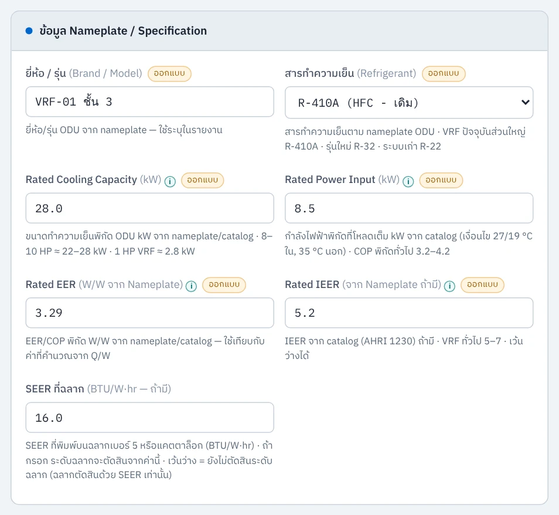
1
2
3
4
5
6
7
1
ยี่ห้อ/รุ่น หรือชื่อระบบ — ไว้จำว่าชุดไหน
2
สารทำความเย็นตามป้าย
3
ความเย็นพิกัด (kW) — ช่องเดียวกับขนาด ODU ในแท็บ 2
4
กำลังไฟฟ้าพิกัด (kW)
5
EER บนป้าย — ไว้เทียบกับที่เครื่องมือคำนวณ
6
IEER / IPLV บนป้าย (ถ้ามี)
7
SEER ที่ฉลากเบอร์ 5 — ไม่กรอก เครื่องมือจะยังไม่ตัดสินระดับฉลาก
ป้ายบอกเป็น BTU/h: หาร 3,412 ให้เป็น kW ก่อนกรอก (96,000 BTU/h ≈ 28.1 kW)
ขั้นที่ 2
ข้อมูลโหลดบางส่วน และกดคำนวณ
คู่มือใช้งาน · ระบบปรับอากาศ VRV/VRF (VRV/VRF Performance Calculator) · ระดับ Free
8 / 30
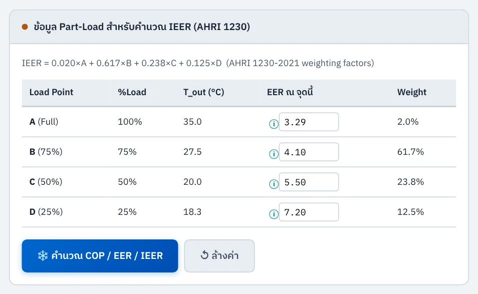
1
2
3
4
5
1
EER ที่โหลด 100 %
2
EER ที่โหลด 75 %
3
EER ที่โหลด 50 %
4
EER ที่โหลด 25 %
5
กด คำนวณ COP / EER / IEER
ค่า 4 จุดนี้อยู่ในแคตตาล็อกของผู้ผลิต — ไม่มีข้อมูล ปล่อยค่าตั้งต้นไว้ได้ ไม่กระทบ COP และ EER
เครื่องมือรวมเป็น IEER ด้วยน้ำหนัก 2 % · 61.7 % · 23.8 % · 12.5 % — โหลด 75 % มีน้ำหนักมากที่สุด
อ่านผลแท็บ 1
คู่มือใช้งาน · ระบบปรับอากาศ VRV/VRF (VRV/VRF Performance Calculator) · ระดับ Free
9 / 30
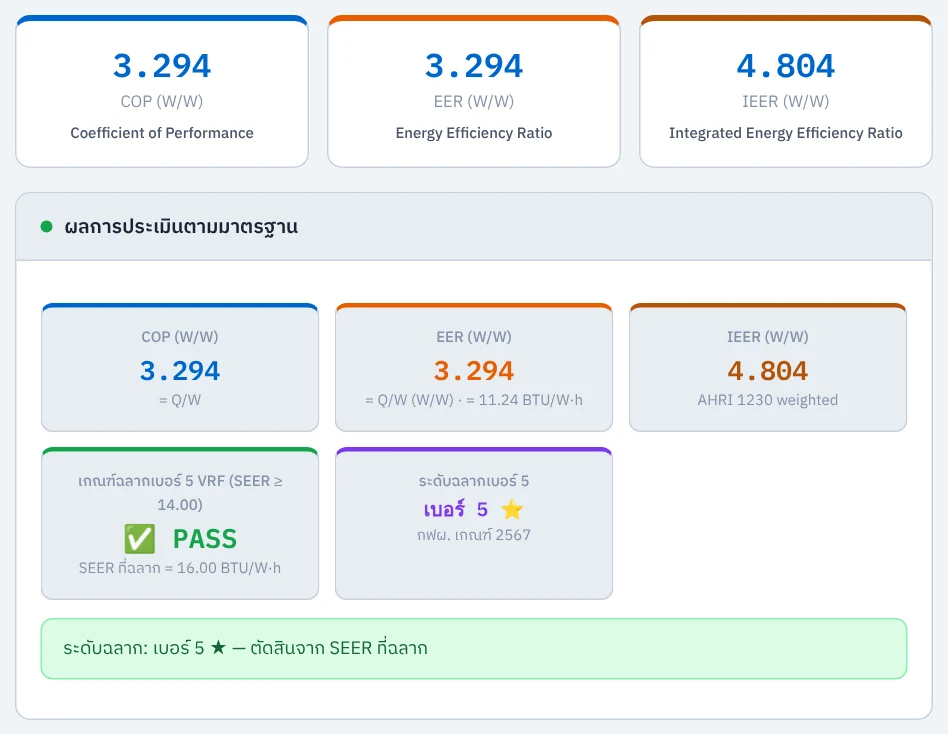
1
2
3
4
1
COP = 3.294 = 28.0 ÷ 8.5
2
EER เท่ากับ COP เมื่อคิดเป็น W/W · = 11.24 BTU/W·h
3
IEER = 4.804 — สูงกว่า COP เพราะโหลดบางส่วนประสิทธิภาพดีกว่า
4
เกณฑ์ฉลากเบอร์ 5 (SEER ≥ 14.00) ✅ PASS · ระดับ เบอร์ 5 ⭐
ระดับฉลากตัดสินจาก SEER ที่ฉลาก เท่านั้น — EER และ IEER ใช้เทียบระดับฉลากไม่ได้
ค่าในแท็บนี้เป็นค่าพิกัดตามป้าย — ของจริงวันนี้ต้องวัดในแท็บ 3
ตารางเกณฑ์ฉลากประหยัดไฟเบอร์ 5 ของ VRF
คู่มือใช้งาน · ระบบปรับอากาศ VRV/VRF (VRV/VRF Performance Calculator) · ระดับ Free
10 / 30
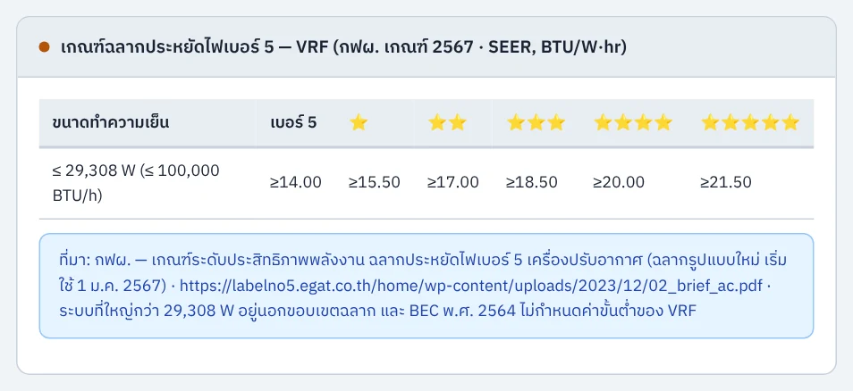
อ่านจากซ้ายไปขวา: เบอร์ 5 → ★ → ★★ … ยิ่งดาวมาก SEER ขั้นต่ำยิ่งสูง
อาคาร A: SEER ที่ฉลาก 16.0 → เบอร์ 5 ⭐
ฉลากครอบคลุม VRF ขนาดไม่เกิน 29,308 W ต่อชุด — ใหญ่กว่านี้เครื่องมือจะขึ้นว่านอกขอบเขต
💡 เคล็ดลับ
ที่มาของเกณฑ์เขียนไว้ใต้ตารางในเครื่องมือ — ใช้อ้างอิงในรายงานได้
ขั้นที่ 3
แท็บ 2: ขนาดคอยล์ร้อนและคอยล์เย็นทุกเครื่อง
คู่มือใช้งาน · ระบบปรับอากาศ VRV/VRF (VRV/VRF Performance Calculator) · ระดับ Free
11 / 30
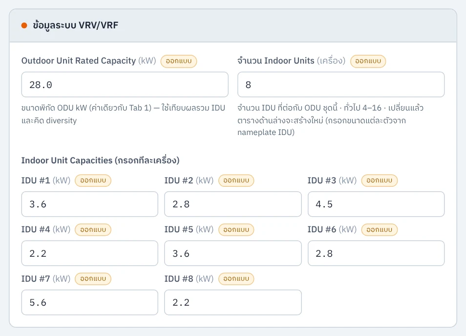
1
2
3
4
1
ความเย็นพิกัดของ ODU (kW) — ผูกกับช่องในแท็บ 1 เป็นค่าเดียว
2
จำนวน IDU ที่ต่ออยู่ — เปลี่ยนแล้วจำนวนช่องด้านล่างเปลี่ยนตาม
3
ขนาด IDU แต่ละเครื่อง (kW) — กรอกให้ครบทุกเครื่อง
4
เครื่องสุดท้าย
ขนาด ODU กรอกที่เดียวพอ: แก้ความเย็นพิกัดในแท็บ 1 เป็น 40 kW → ช่องนี้เปลี่ยนเป็น 40 เอง · Diversity 0.975 → 0.682
ขนาด IDU อ่านจากป้ายแต่ละเครื่อง หรือจากรหัสรุ่น (เช่น รุ่นลงท้าย 36 มักหมายถึง 3.6 kW)
IDU ที่ถอดออกหรือไม่ใช้แล้ว ไม่ต้องนับ
ขั้นที่ 4
ความยาวท่อ ความต่างระดับ และอุณหภูมิ
คู่มือใช้งาน · ระบบปรับอากาศ VRV/VRF (VRV/VRF Performance Calculator) · ระดับ Free
12 / 30
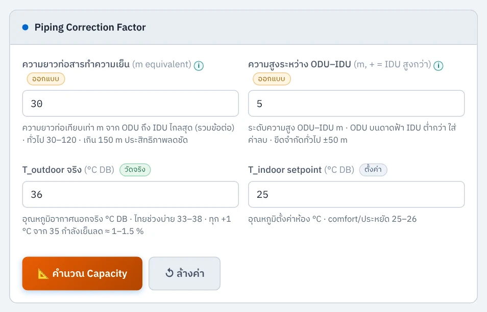
1
2
3
4
5
1
ความยาวท่อน้ำยาจาก ODU ถึง IDU ที่ไกลสุด (m)
2
ความต่างระดับระหว่าง ODU กับ IDU (m)
3
อุณหภูมินอกอาคารที่ใช้ประเมิน (°C)
4
อุณหภูมิห้องที่ต้องการ (°C)
5
กด คำนวณ Capacity
ท่อยิ่งยาว ODU ยิ่งอยู่สูง/ต่ำกว่า IDU มาก ความเย็นที่ส่งถึงห้องยิ่งลดลง
ODU กับ IDU อยู่ระดับเดียวกัน ใส่ความต่างระดับ 0 — อย่าเว้นว่าง (ดูสไลด์ "ช่องว่างกับศูนย์ต่างกัน")
ตัวคูณที่เครื่องมือใช้เป็นสูตรอย่างง่าย — งานออกแบบจริงให้ใช้ตารางของผู้ผลิต
อ่านผลแท็บ 2: คอยล์ร้อนพอกับคอยล์เย็นไหม
คู่มือใช้งาน · ระบบปรับอากาศ VRV/VRF (VRV/VRF Performance Calculator) · ระดับ Free
13 / 30
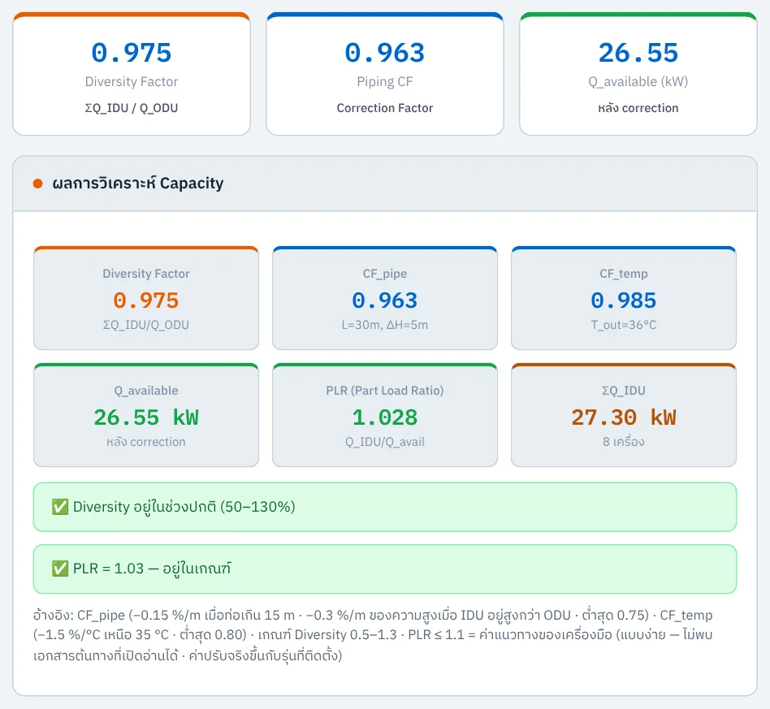
1
2
3
4
5
1
Diversity 0.975 = IDU รวม 27.30 kW ÷ ODU 28.0 kW
2
ตัวคูณจากท่อ 0.963 · จากอุณหภูมินอกอาคาร 0.985
3
ความเย็นที่เหลือจริง 26.55 kW
4
PLR 1.028 — ✅ PLR = 1.03 — อยู่ในเกณฑ์
5
บรรทัด อ้างอิง: ตัวคูณท่อ/อุณหภูมิ และเกณฑ์ Diversity · PLR = ค่าแนวทางของเครื่องมือ
✅ Diversity อยู่ในช่วงปกติ (50–130%)
PLR เกิน 1.10 เครื่องมือจะเตือนว่า ODU ไม่พอ — ห้องปลายทางจะเย็นไม่ถึงเมื่อทุกเครื่องเปิดพร้อมกัน
ลองเปลี่ยนค่า (What-if): อะไรทำให้คอยล์ร้อนไม่พอ
คู่มือใช้งาน · ระบบปรับอากาศ VRV/VRF (VRV/VRF Performance Calculator) · ระดับ Free
14 / 30
| กรณี | ความเย็นที่เหลือ (kW) | Diversity | PLR | สถานะ |
|---|---|---|---|---|
| อาคาร A: ท่อ 30 m · ต่างระดับ 5 m · 36 °C | 26.55 | 0.975 | 1.028 | ✅ PLR = 1.03 — อยู่ในเกณฑ์ |
| เปลี่ยน IDU 2 เครื่องเป็น 7.1 และ 9.0 kW | 26.55 | 1.189 | 1.254 | ❌ PLR = 1.25 เกิน 110% — Outdoor Unit ไม่พอ |
| ท่อยาว 90 m ต่างระดับ 30 m | 22.00 | 0.975 | 1.241 | ❌ PLR = 1.24 เกิน 110% — Outdoor Unit ไม่พอ |
| อากาศนอกอาคาร 40 °C | 24.93 | 0.975 | 1.095 | ✅ PLR = 1.10 — อยู่ในเกณฑ์ |
ทำเอง: แก้ค่า → กด คำนวณ Capacity → จดผล → แก้กลับเป็นค่าเดิม
ต่อเติมห้องแล้วเพิ่ม/เปลี่ยน IDU โดยไม่ดู ODU เป็นสาเหตุที่พบบ่อยของ "แอร์ไม่เย็นตอนบ่าย"
ODU ตั้งบนดาดฟ้าโดนแดดหรือลมร้อนวนกลับ อุณหภูมิอากาศเข้า ODU สูงกว่าอากาศทั่วไปได้หลายองศา
ช่องว่างกับศูนย์ต่างกัน
คู่มือใช้งาน · ระบบปรับอากาศ VRV/VRF (VRV/VRF Performance Calculator) · ระดับ Free
15 / 30
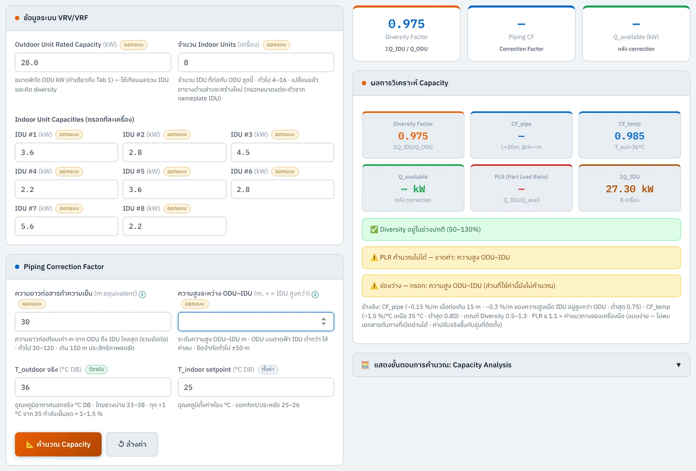
1
2
3
4
1
ช่องความต่างระดับ ODU–IDU เว้นว่าง
2
ตัวคูณจากท่อขึ้น — (ไม่คำนวณ)
3
ความเย็นที่เหลือและ PLR ขึ้น — (ส่วนที่ใช้ค่านี้ไม่คำนวณ)
4
กล่อง ⚠️ บอกชื่อช่องที่ต้องกรอก · กล่องเหลือง "PLR คำนวณไม่ได้" ก็บอกช่องที่ขาด (ขาดค่า: ความสูง ODU–IDU)
ใส่ 0 = ODU กับ IDU อยู่ระดับเดียวกัน → เครื่องมือใช้ 0 จริง: ตัวคูณจากท่อ 0.978 · ความเย็นที่เหลือ 26.96 kW · PLR 1.013
เคสอาคาร A (ต่างระดับ 5 m): ตัวคูณ 0.963 · ความเย็นที่เหลือ 26.55 kW
ส่วนที่ไม่ใช้ช่องนี้ยังคำนวณตามปกติ: Diversity 0.975 · ตัวคูณอุณหภูมิ 0.985
⚠️ ระวัง
ไม่รู้ค่า ให้หาค่าจริงก่อน อย่าใส่ 0 แทน — 0 ถูกนำไปคำนวณจริง ส่วนช่องว่างเครื่องมือจะเตือนและไม่คำนวณส่วนนั้น
ขั้นที่ 5
แท็บ 3: วัดไฟฟ้าที่ชุดคอยล์ร้อน
คู่มือใช้งาน · ระบบปรับอากาศ VRV/VRF (VRV/VRF Performance Calculator) · ระดับ Free
16 / 30
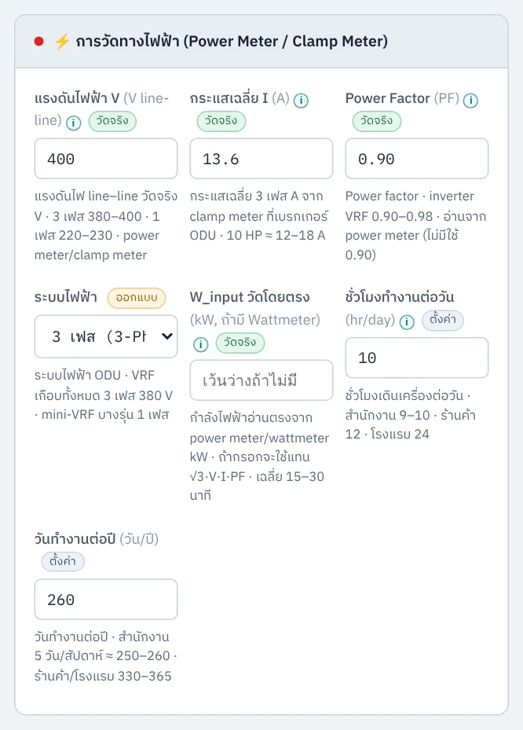
1
2
3
4
5
6
1
แรงดันระหว่างสาย (V)
2
กระแสเฉลี่ย 3 เฟส (A)
3
Power factor — ไม่มีเครื่องวัดใช้ค่าตั้งต้น
4
ระบบไฟ: 3 เฟส หรือ 1 เฟส
5
มี power meter อ่าน kW ได้ตรง ๆ กรอกช่องนี้แทน จะแม่นกว่า
6
ชั่วโมงต่อวัน และวันต่อปี — ใช้คิดค่าไฟ
วัดที่สายเข้า ODU ตอนระบบเดินนิ่งแล้ว 15 นาที และจดเวลาไว้ ให้ตรงกับตอนวัดลม
ขั้นที่ 6
วัดลมที่คอยล์เย็น
คู่มือใช้งาน · ระบบปรับอากาศ VRV/VRF (VRV/VRF Performance Calculator) · ระดับ Free
17 / 30
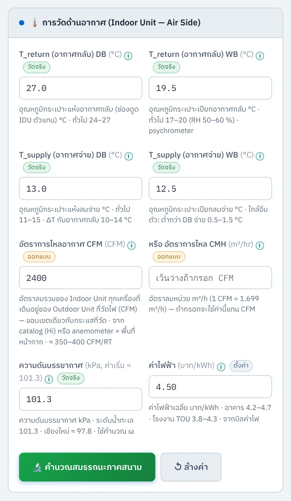
1
2
3
4
5
6
7
8
1
ลมกลับ กระเปาะแห้ง (°C)
2
ลมกลับ กระเปาะเปียก (°C)
3
ลมจ่าย กระเปาะแห้ง (°C)
4
ลมจ่าย กระเปาะเปียก (°C)
5
ปริมาณลมรวม (CFM) ของทุก IDU ที่เดินอยู่
6
หรือกรอกเป็น m³/h แทน
7
ค่าไฟฟ้า (บาท/kWh)
8
กด คำนวณสมรรถนะภาคสนาม
ไฟฟ้าที่วัดเป็นของทั้งชุด ความเย็นจึงต้องเป็นของทุก IDU ที่เดินอยู่รวมกัน — กรอกลมเครื่องเดียว COP จะต่ำผิดจริงมาก
อุณหภูมิลมใช้ค่าเฉลี่ยของเครื่องที่วัด (เครื่องใหญ่มีน้ำหนักมากกว่า)
อ่านผลแท็บ 3: ระบบทำงานจริงได้เท่าไร
คู่มือใช้งาน · ระบบปรับอากาศ VRV/VRF (VRV/VRF Performance Calculator) · ระดับ Free
18 / 30
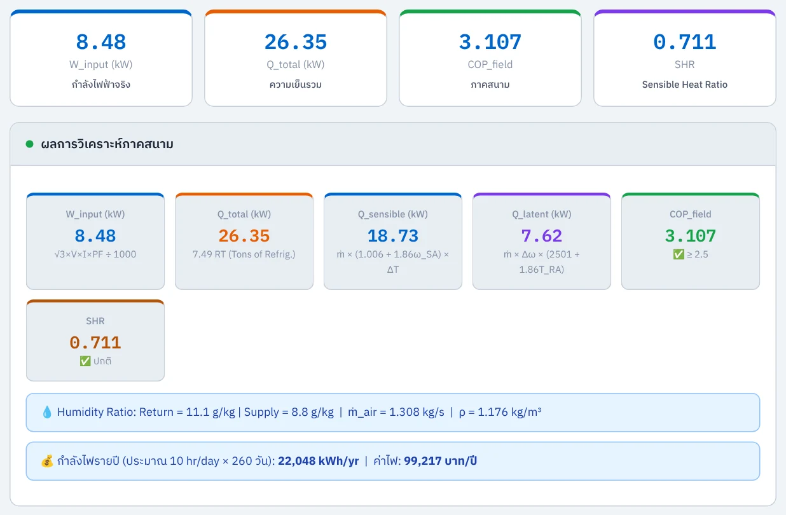
1
2
3
4
5
6
1
กำลังไฟฟ้าจริง 8.48 kW
2
ความเย็นรวม 26.35 kW = 7.49 ตันความเย็น
3
COP ภาคสนาม 3.107 → ✅ ≥ 2.5
4
SHR 0.711 → ✅ ปกติ
5
รายละเอียด: ความเย็นสัมผัส 18.73 + แฝง 7.62 kW · ค่าไฟ 99,217 บาท/ปี
6
บรรทัดอ้างอิง: เกณฑ์ COP ภาคสนาม และ SHR = ค่าแนวทางของเครื่องมือ
ความเย็นที่วัดได้ 26.35 kW ใกล้กับความเย็นที่เหลือจริงจากแท็บ 2 (26.55 kW) — ข้อมูลสองแท็บสอดคล้องกัน
ความชื้นในลม: กลับ 11.1 → จ่าย 8.8 g/kg — ส่วนต่างคือน้ำที่ไหลออกทางท่อน้ำทิ้ง
อ่านแผนภูมิไซโครเมตริก
คู่มือใช้งาน · ระบบปรับอากาศ VRV/VRF (VRV/VRF Performance Calculator) · ระดับ Free
19 / 30
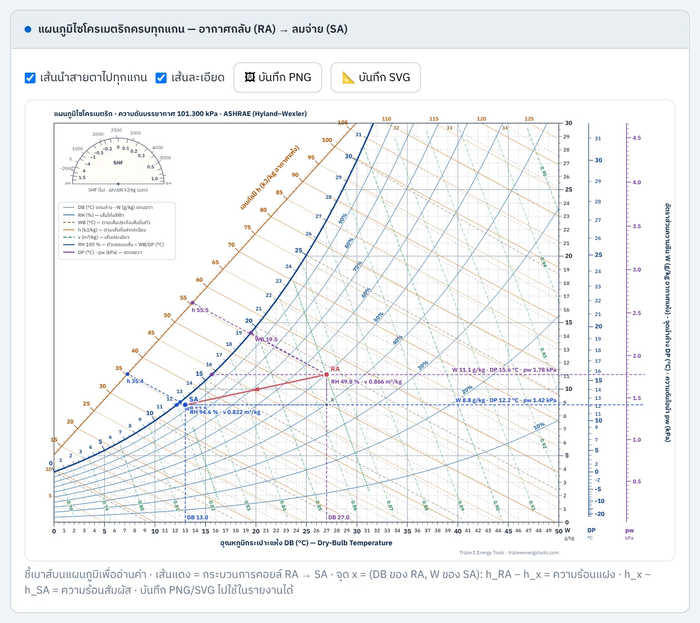
จุด RA = ลมกลับ · จุด SA = ลมจ่าย · เส้นแดง = สิ่งที่คอยล์เย็นทำกับอากาศ
เส้นจาก RA ไป SA ชี้ลงซ้าย: ซ้าย = อุณหภูมิลด · ลง = ความชื้นลด
ปุ่มใต้หัวการ์ดบันทึกแผนภูมิเป็นรูป PNG หรือ SVG ใส่รายงานได้
การ์ด 📖 สูตรอ้างอิง Psychrometric ใต้แผนภูมิ: บรรทัดอ้างอิงระบุ ASHRAE Handbook—Fundamentals (SI) 2017 บทที่ 1 พร้อมเลขสมการและหน้าของแต่ละสูตร — ใช้อ้างในรายงานได้
💡 เคล็ดลับ
แกนนอน = อุณหภูมิกระเปาะแห้ง · แกนตั้งขวา = ปริมาณไอน้ำในอากาศ (g/kg)
ลองเปลี่ยนค่า (What-if): อาการไหนทำให้ประสิทธิภาพตก
คู่มือใช้งาน · ระบบปรับอากาศ VRV/VRF (VRV/VRF Performance Calculator) · ระดับ Free
20 / 30
| กรณี | ความเย็น (kW) | COP | ตกจากป้าย (%) | ผลในแท็บ 5 |
|---|---|---|---|---|
| อาคาร A (ปกติ) | 26.35 | 3.107 | 5.7 | ✅ สมรรถนะอยู่ในเกณฑ์ดี |
| แผ่นกรองตัน: ลมรวมเหลือ 1,800 CFM | 19.76 | 2.330 | 29.3 | ❌ สมรรถนะตกต่ำมาก ควรบำรุงรักษา/ตรวจสอบ |
| คอยล์ร้อนสกปรก: กระแสขึ้นเป็น 16.0 A | 26.35 | 2.641 | 19.8 | ⚠️ สมรรถนะลดลงพอควร ควรตรวจสอบ |
ทำเอง: แก้ค่า → กด คำนวณสมรรถนะภาคสนาม → ดูแท็บ 5 → แก้กลับเป็นค่าเดิม
แท็บ 5 แบ่งระดับ: ตกไม่เกิน 10 % ดี · 10–20 % ควรตรวจสอบ · เกิน 20 % ต้องบำรุงรักษา (ค่าแนวทางของเครื่องมือ)
ลมน้อยลงความเย็นหายตามเกือบเท่ากัน — ล้างแผ่นกรองและคอยล์เย็นเป็นมาตรการแรกเสมอ
ขั้นที่ 7
แท็บ 4: จุดทำงานของวงจรน้ำยา
คู่มือใช้งาน · ระบบปรับอากาศ VRV/VRF (VRV/VRF Performance Calculator) · ระดับ Free
21 / 30
1
2
3
4
5
6
7
8
1
สารทำความเย็น — ต้องตรงกับป้ายเครื่อง
2
อุณหภูมิอิ่มตัวด้านต่ำ (°C)
3
อุณหภูมิอิ่มตัวด้านสูง (°C)
4
Superheat (°C) — ปกติ 5–10°C
5
Subcooling (°C) — ปกติ 3–8°C
6
อุณหภูมิท่อจ่ายออกจากคอมเพรสเซอร์ (°C) — R-410A ปกติ <95°C
7
มีแต่ค่าความดันจากเกจ กรอกช่องความดันแทนได้
8
กด วิเคราะห์วงจรสาร
ระบบ VRF ส่วนใหญ่อ่านค่าเหล่านี้ได้จากหน้าจอ service ของ ODU หรือโปรแกรมของผู้ผลิต ไม่ต้องต่อเกจ
อ่านผลแท็บ 4 และแผนภาพวงจร
คู่มือใช้งาน · ระบบปรับอากาศ VRV/VRF (VRV/VRF Performance Calculator) · ระดับ Free
22 / 30
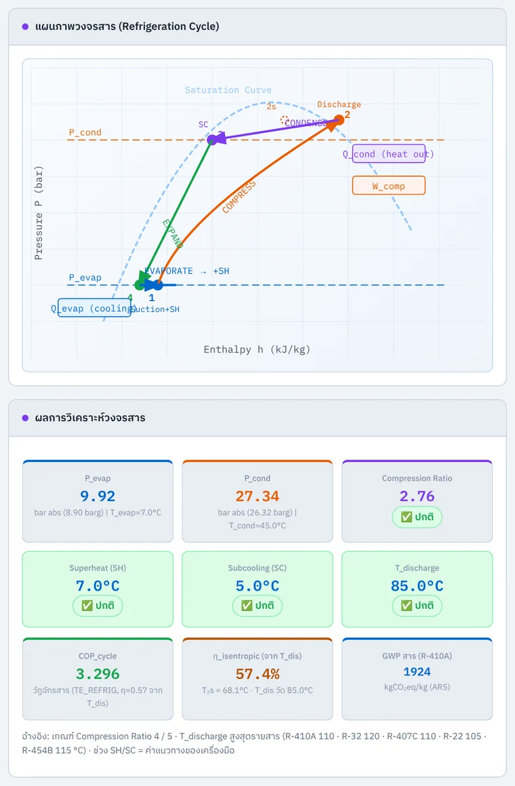
1
2
3
1
แผนภาพวงจร 4 ช่วง: อัด → ควบแน่น → ลดความดัน → ระเหย
2
อัตราส่วนความดัน 2.76 ✅ ปกติ · Superheat 7.0 °C ✅ ปกติ · Subcooling 5.0 °C ✅ ปกติ
3
บรรทัดอ้างอิง: เกณฑ์อัตราส่วนความดัน · T_discharge สูงสุด · ช่วง SH/SC = ค่าแนวทางของเครื่องมือ
ความดันระเหย 8.90 bar g · ความดันควบแน่น 26.32 bar g — เทียบกับเกจที่หน้างานได้
COP ของวัฏจักร 3.296 เป็นค่าทางทฤษฎีจากจุดทำงานที่กรอก — ใช้ดูแนวโน้ม ไม่ใช่ค่าที่วัดได้
สาร R-410A มีค่า GWP 1924 — น้ำยารั่ว 1 kg เทียบเท่าก๊าซเรือนกระจกราว 1.9 ตัน CO₂
ตารางช่วงค่าปกติ และลองเปลี่ยนค่า
คู่มือใช้งาน · ระบบปรับอากาศ VRV/VRF (VRV/VRF Performance Calculator) · ระดับ Free
23 / 30
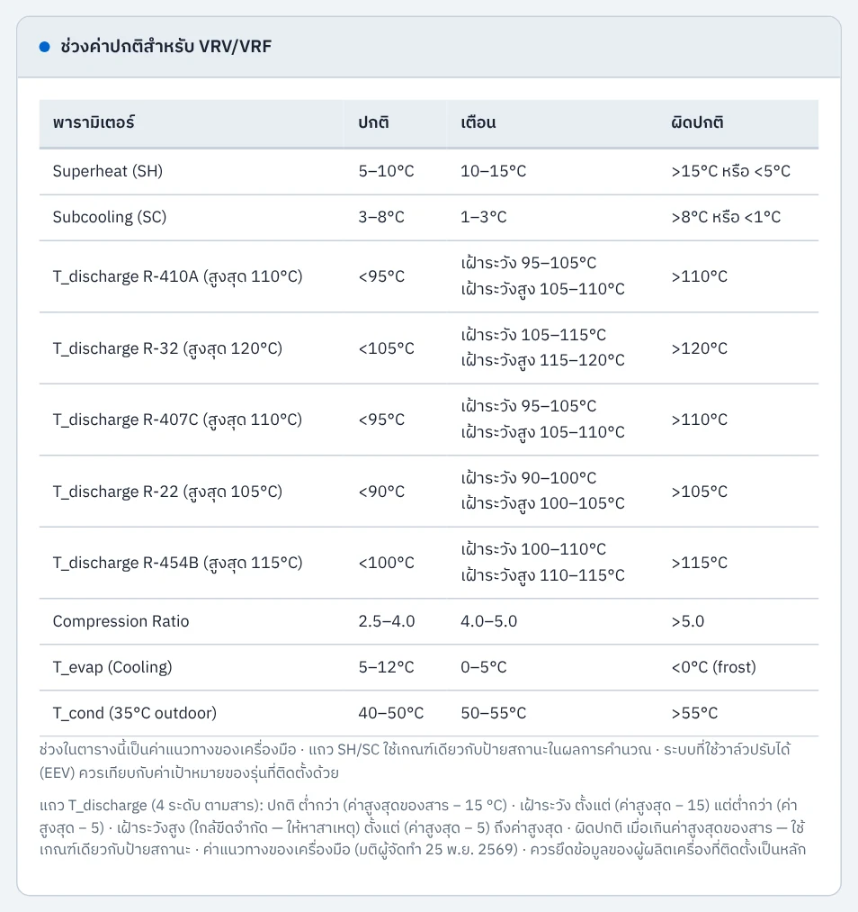
1
2
3
4
1
Superheat: ปกติ 5–10°C · เตือน 10–15°C · ผิดปกติ >15°C หรือ <5°C
2
Subcooling: ปกติ 3–8°C · เตือน 1–3°C · ผิดปกติ >8°C หรือ <1°C
3
ช่วงในตาราง = ค่าแนวทางของเครื่องมือ · แถว SH/SC และ T_discharge ใช้เกณฑ์เดียวกับป้ายสถานะในผล
4
T_discharge แยกตามสาร 5 ชนิด 4 ระดับ — R-410A: ปกติ <95°C · เฝ้าระวัง 95–105°C · เฝ้าระวังสูง 105–110°C · ผิดปกติ >110°C (สไลด์ถัดไป)
ลองเปลี่ยน Superheat เป็น 14 °C → ⚠️ สูง — น้ำยาน้อยหรือวาล์วขยายตัวเปิดไม่พอ
ลองเปลี่ยนอุณหภูมิอิ่มตัวด้านสูงเป็น 55 °C → อัตราส่วนความดันขึ้นเป็น 3.47 · ความดันควบแน่น 33.39 bar g — คอยล์ร้อนระบายความร้อนไม่ดี
อ่าน SH กับ SC คู่กันเสมอ: SH สูง + SC ต่ำ = น้ำยาขาด · SH ต่ำ + SC สูง = น้ำยาเกิน
⚠️ ระวัง
การเติมหรือถ่ายน้ำยาต้องทำโดยช่างที่ผ่านการอบรม และต้องชั่งน้ำหนักตามที่ผู้ผลิตกำหนด
T_discharge 4 ระดับ: ลองเปลี่ยนค่า (สาร R-410A)
คู่มือใช้งาน · ระบบปรับอากาศ VRV/VRF (VRV/VRF Performance Calculator) · ระดับ Free
24 / 30
| T_discharge (°C) | ป้ายในผลแท็บ 4 | กล่องแดงแท็บ 4 | ข้อเสนอแนะแท็บ 5 |
|---|---|---|---|
| 85 (อาคาร A) | ✅ ปกติ | — | ✅ ยังไม่พบปัญหาจากข้อมูลที่คำนวณ — แนะนำตรวจสอบ Coil Cleaning ทุก 6 เดือน |
| 98 | ⚠️ เฝ้าระวัง | — | ✅ ยังไม่พบปัญหาจากข้อมูลที่คำนวณ — แนะนำตรวจสอบ Coil Cleaning ทุก 6 เดือน |
| 107 | ⚠️ เฝ้าระวังสูง — ใกล้ขีดจำกัด ให้หาสาเหตุ | — | 🟡 T_discharge ใกล้ค่าสูงสุดของสาร (105–110°C) — ให้หาสาเหตุ |
| 112 | ❌ ผิดปกติ — เกินค่าสูงสุดของสาร | ❌ T_discharge (112°C) เกินค่าสูงสุดที่ปลอดภัย (110°C) สำหรับ R-410A | 🔴 T_discharge สูงเกิน 110°C — อันตราย ตรวจสอบทันที |
ช่วงของ R-410A ตามตารางแท็บ 4: ปกติ <95°C · เฝ้าระวัง 95–105°C · เฝ้าระวังสูง 105–110°C · ผิดปกติ >110°C
ขอบช่วงคิดจากค่าสูงสุดของสาร (หมายเหตุใต้ตาราง): ต่ำกว่า สูงสุด − 15 = ปกติ · ถึงต่ำกว่า สูงสุด − 5 = เฝ้าระวัง · ถึงค่าสูงสุด = เฝ้าระวังสูง (ใกล้ขีดจำกัด ให้หาสาเหตุ) · เกินค่าสูงสุด = ผิดปกติ
ทำเอง: แท็บ 4 แก้ T_discharge → กด วิเคราะห์วงจรสาร → ดูป้าย แล้วเปิดแท็บ 5 → แก้กลับเป็นค่าเดิม
⚠️ ระวัง
เกณฑ์ T_discharge เป็นค่าแนวทางของเครื่องมือ — ควรยึดข้อมูลของผู้ผลิตเครื่องที่ติดตั้งเป็นหลัก
ขั้นที่ 8
แท็บ 5: สรุปผลทั้งระบบ
คู่มือใช้งาน · ระบบปรับอากาศ VRV/VRF (VRV/VRF Performance Calculator) · ระดับ Free
25 / 30
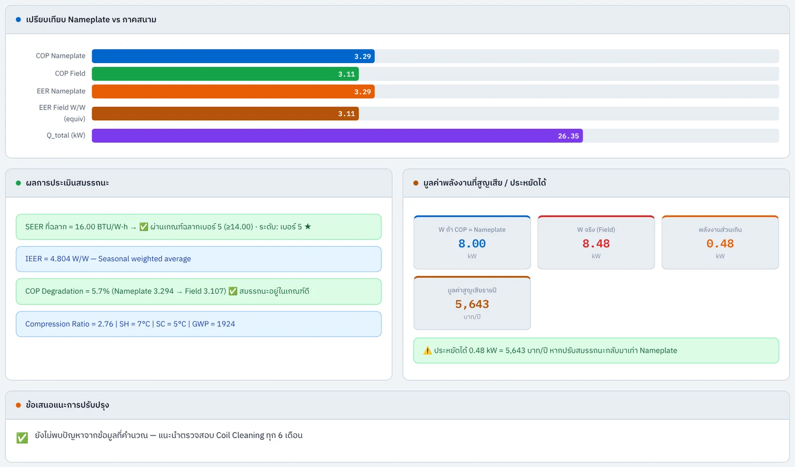
1
2
3
4
5
1
กราฟแท่งเทียบค่าป้ายกับค่าที่วัดได้
2
ผลประเมิน: ฉลาก · IEER · COP ตกจากป้าย 5.7 % ✅ สมรรถนะอยู่ในเกณฑ์ดี · วงจรน้ำยา
3
ถ้า COP เท่าป้ายจะใช้ไฟ 8.00 kW — ส่วนต่าง 0.48 kW = 5,643 บาท/ปี
4
ข้อเสนอแนะ — เปลี่ยนตามอาการที่พบ
5
บรรทัดอ้างอิง: เกณฑ์ COP ตก 10 % / 20 % และระดับมูลค่าสูญเสีย = ค่าแนวทางของเครื่องมือ
COP ตกจากป้ายเล็กน้อยเป็นปกติของเครื่องที่ใช้งานแล้ว — ดูแนวโน้มจากการวัดซ้ำทุก 6–12 เดือน
💡 เคล็ดลับ
แท็บนี้ไม่มีช่องกรอก — ถ้ายังว่าง แปลว่ายังไม่ได้กดคำนวณในแท็บ 1–4
บันทึกงาน และเปิดงานเดิม
คู่มือใช้งาน · ระบบปรับอากาศ VRV/VRF (VRV/VRF Performance Calculator) · ระดับ Free
26 / 30
1
2
3
1
บันทึก JSON — เก็บค่าที่กรอกทั้งหมดเป็นไฟล์ 1 ไฟล์
2
โหลด JSON — เปิดไฟล์งานเดิมกลับมาทำต่อ
3
คืนค่าตั้งต้น — ล้างทุกช่องกลับเป็นตัวอย่าง (บันทึก JSON ก่อนกด)
ODU 1 ชุด = ไฟล์ JSON 1 ไฟล์ — ตั้งชื่อตามระบบ เช่น อาคารA_VRF-01_2569-11-16.json
ท้ายแท็บ 1–4 มีแถบ 🧮 แสดงขั้นตอนการคำนวณ — กดเพื่อดูสูตรและตัวเลขที่แทนทีละบรรทัด
พิมพ์ผลด้วยเมนูพิมพ์ของเบราว์เซอร์ (Ctrl+P) แล้วเลือกบันทึกเป็น PDF
ข้อผิดพลาดที่พบบ่อย
คู่มือใช้งาน · ระบบปรับอากาศ VRV/VRF (VRV/VRF Performance Calculator) · ระดับ Free
27 / 30
✗ กรอกลมของ IDU เครื่องเดียว
✓ ไฟฟ้าเป็นของทั้งชุด — ลมต้องรวมทุก IDU ที่เดินอยู่
✗ กรอกความเย็นเป็น BTU/h
✓ ช่องความเย็นหน่วย kW — หาร 3,412 ก่อน
✗ นับ IDU ไม่ครบ
✓ แท็บ 2 ต้องกรอกทุกเครื่องที่ต่อกับ ODU ชุดนั้น
✗ ใช้ความยาวท่อรวมทุกสาขา
✓ ใช้ระยะจาก ODU ถึง IDU เครื่องที่ไกลที่สุด
✗ วัดตอนเปิดไม่กี่ห้อง
✓ โหลดต่ำมาก COP ที่วัดได้ไม่เทียบกับป้าย — วัดตอนใช้งานปกติ
✗ วัดไฟกับวัดลมคนละเวลา
✓ VRF ปรับรอบตลอด — จดไฟและลมช่วงเวลาเดียวกัน
✗ ไม่กรอก SEER ที่ฉลาก
✓ เครื่องมือจะขึ้น "ยังเทียบไม่ได้" — EER/IEER ใช้แทนไม่ได้
✗ เปิดแท็บ 5 ก่อนคำนวณ
✓ ต้องกดคำนวณแท็บ 1–4 ก่อน แท็บ 5 จึงมีข้อมูลสรุป
แบบฝึกหัด: อาคาร B ชุดคอยล์ร้อน 45 kW
คู่มือใช้งาน · ระบบปรับอากาศ VRV/VRF (VRV/VRF Performance Calculator) · ระดับ Free
28 / 30
| ข้อมูล | ค่า |
|---|---|
| ป้าย: ความเย็น · กำลังไฟฟ้า | 45.0 kW · 13.2 kW |
| ไฟฟ้าที่วัด: แรงดัน · กระแส · PF | 400 V · 24.5 A · 0.90 |
| ลมกลับ DB / WB | 26.5 / 19.0 °C |
| ลมจ่าย DB / WB | 14.0 / 13.0 °C |
| ปริมาณลมรวมทุก IDU | 3,600 CFM |
| ค่าอื่นทั้งหมด | ใช้ค่าตั้งต้นของเครื่องมือ |
คำถาม — กรอกแล้วตอบ
1
COP ตามป้าย = ______
2
กำลังไฟฟ้าจริง = ______ kW
3
ความเย็นที่ทำได้จริง = ______ kW
4
COP ภาคสนาม = ______ สถานะ ______
💡 เคล็ดลับ
กด "คืนค่าตั้งต้น" ก่อนเริ่ม → แท็บ 1 กรอกป้ายแล้วคำนวณ → แท็บ 3 กรอกค่าที่วัดแล้วคำนวณ
เฉลยแบบฝึกหัด อาคาร B
คู่มือใช้งาน · ระบบปรับอากาศ VRV/VRF (VRV/VRF Performance Calculator) · ระดับ Free
29 / 30
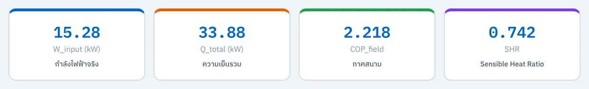
1) COP ตามป้าย = 45.0 ÷ 13.2 = 3.409
2) กำลังไฟฟ้าจริง = √3 × 400 × 24.5 × 0.90 ÷ 1,000 = 15.28 kW (สูงกว่าป้าย 13.2 kW)
3) ความเย็นที่ทำได้จริง = 33.88 kW (9.63 ตันความเย็น) — ต่ำกว่าพิกัด 45 kW
4) COP ภาคสนาม = 2.218 → ❌ < 2.5 ต่ำ · ค่าไฟ 178,737 บาท/ปี
✓ ผ่าน
ได้ตัวเลขตรงกัน = ใช้เครื่องมือเป็นแล้ว · อาคาร B กินไฟเกินป้ายและเย็นไม่ถึง — ตรวจแผ่นกรอง คอยล์ร้อน แล้วจึงตรวจน้ำยา
สรุป 1 หน้า (พิมพ์ติดไว้ข้างคอมพิวเตอร์)
คู่มือใช้งาน · ระบบปรับอากาศ VRV/VRF (VRV/VRF Performance Calculator) · ระดับ Free
30 / 30
1
แท็บ 1: ป้าย ODU
ความเย็น (kW) · ไฟฟ้า (kW) · SEER ที่ฉลาก → กดคำนวณ
2
แท็บ 2: IDU ทุกเครื่อง
ขนาดแต่ละเครื่อง (kW)
3
แท็บ 2: ท่อและอุณหภูมิ
ความยาวท่อ · ต่างระดับ · อากาศนอกอาคาร → กดคำนวณ
4
แท็บ 3: วัดไฟฟ้า
V · A · PF ของ ODU (หรือ kW จาก power meter)
5
แท็บ 3: วัดลม
ลมกลับ/จ่าย DB/WB · ลมรวมทุก IDU → กดคำนวณ
6
แท็บ 4: น้ำยา
อุณหภูมิอิ่มตัว 2 ด้าน · SH · SC → กดวิเคราะห์
7
แท็บ 5: สรุป
COP ตกจากป้าย · ค่าไฟ · ข้อเสนอแนะ
8
บันทึก JSON
1 ชุด ODU = 1 ไฟล์
อ่านผลแล้วตรวจ
☐
ขึ้น ⚠️ ช่องว่าง → กรอกให้ครบ (0 = ค่า 0 จริง)
☐
PLR > 1.10 → ODU ไม่พอ
☐
COP ตกเกิน 20 % → บำรุงรักษา
☐
SH สูง + SC ต่ำ → สงสัยน้ำยาขาด
☐
T_discharge เฝ้าระวังสูง → หาสาเหตุ
☐
ยังเทียบฉลากไม่ได้ → กรอก SEER ที่ฉลาก
อ.หนึ่ง กลับทวี / Aj. Nueng Klubtavee
tripleeenergytools.com
tripleeenergytools.com